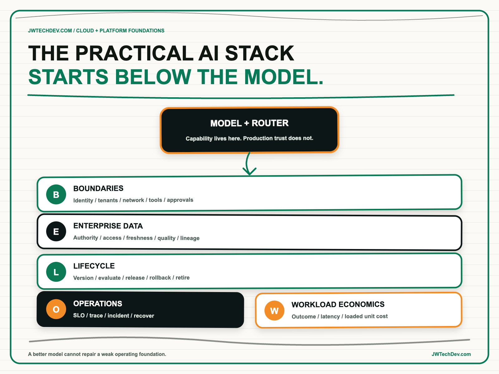

The practical AI stack starts below the model.
The model is the most visible part of an AI system, but it is not the foundation. Production value depends on identity, authorized data, dependable runtime services, release discipline, observability, recovery, ownership, and unit economics. A better model can improve capability. It cannot repair a weak operating system underneath it.

Quick answer
If an AI initiative is unreliable, slow, insecure, unaffordable, or impossible to operate, changing the model is rarely the complete answer. Review the system below it first: boundaries, enterprise data, lifecycle, operations, and workload economics.
I call this the BELOW Model Review. It gives executives and builders a common way to ask whether the platform can safely turn model capability into repeatable business outcomes. Model selection remains important, but it should happen inside a system whose foundations can carry the workload.
The model trap
Model releases are easy to see and compare. Infrastructure gaps are distributed across identity, data platforms, integration services, networks, deployment pipelines, telemetry, support processes, and budgets. That visibility gap can make leaders treat the model as the whole architecture.
AWS guidance for enterprise-ready generative AI platforms describes a layered environment that starts with data and compute infrastructure, then adds model access, security and governance, and reusable application patterns. Its infrastructure guidance begins with application compute, storage, monitoring, event-driven services, and retrieval infrastructure. That is the practical sequence: the model participates in a larger workload.
The production question is therefore not “Which model won?” It is “Can this system deliver the required outcome under real identity, data, reliability, latency, security, and cost constraints?” A benchmark cannot answer that by itself.
The BELOW Model Review
B: Boundaries. Define the user, workload, agent, tenant, network, and tool boundaries. Decide who can invoke a model, which data they may retrieve, which tools the system may call, and which write actions require approval. AWS production architecture guidance recommends centralized gateways for authentication, key management, routing, policy, and standardized logging. For agentic systems, least privilege must also follow the tool call and the data context.
E: Enterprise data. Name the authoritative sources, owners, access rules, freshness requirements, lineage, and quality thresholds. Retrieval does not make weak data trustworthy. It only makes weak data easier to retrieve. A useful data foundation must preserve the requesting user's authorization and provide enough provenance for people to evaluate the answer or action.
L: Lifecycle. Version the infrastructure, prompts, models, retrieval configuration, tools, policies, and evaluation sets. Define the path from experiment to test to production, including release gates and rollback. The AWS Machine Learning Lens explicitly recommends reproducibility across infrastructure, data, models, and code. If the team cannot reconstruct what produced an outcome, it cannot manage change with confidence.
O: Operations. Set service objectives, telemetry, alerting, support ownership, incident paths, degradation behavior, and recovery. Production AI needs ordinary distributed-systems discipline plus model and agent evidence: latency, token usage, retrieval quality, tool outcomes, policy decisions, evaluation results, and human escalations. AWS Well-Architected guidance emphasizes observability, component communication, graceful failure, versioning, and verification of distributed work.
W: Workload economics. Measure the loaded cost of a successful business task, not only model tokens. Include application compute, retrieval, storage, orchestration loops, tools, security, telemetry, human review, and support. Then compare quality, latency, and cost by workload. A cheaper model can become expensive through retries and failed outcomes; a premium model can be wasteful when a smaller model meets the requirement.
Fund the underlay as a product
The underlay should not become a multiyear platform program that tries to anticipate every future use case. Build it through representative workloads. Select one real workflow, define the outcome and constraints, and expose the smallest reusable path for identity, data access, runtime, evaluation, observability, and cost attribution.
Every shared capability needs a consumer, owner, service expectation, adoption measure, and retirement path. The platform earns expansion when a second team reuses the capability with less time and risk than building independently. That is a stronger proof than the number of services provisioned.
This is also how leaders preserve model choice. When authorization, data contracts, observability, evaluations, and application workflows are not welded to one model, the organization can route, upgrade, or replace models without rebuilding the operating foundation.
What to do next Monday
- Choose one production-bound AI workflow. Write its business outcome, users, data classes, allowed actions, quality threshold, latency target, and cost unit.
- Draw the stack from the user down. Include identity, gateway, application runtime, tools, data sources, retrieval, logs, evaluations, deployment, and support ownership.
- Run the BELOW review. Mark each category green, amber, or red and attach evidence instead of opinions.
- Fix the highest-risk foundation before upgrading the model. Pick one bounded improvement with an owner and deadline.
- Test two model options inside the same workload. Compare successful outcomes, latency, safety, and loaded unit cost.
- Record the reusable capability. State which next team can consume it and what work that team will no longer need to build.
The practical AI stack starts below the model because that is where trust, repeatability, and economics are created. The best model is the one that can operate inside a system the organization can understand and run.
I will be at AFROTECH in Houston November 2-6. If you are building an enterprise AI platform, global delivery organization, or technical go-to-market motion, I would be glad to compare notes.
Sources checked
- AWS Prescriptive Guidance: building an enterprise-ready generative AI platform
- AWS Prescriptive Guidance: layered approach for generative AI development
- AWS Prescriptive Guidance: reliable data and compute infrastructure
- AWS Prescriptive Guidance: architecting generative AI applications for production
- AWS Well-Architected Machine Learning Lens: design principles
- AWS Well-Architected Generative AI Lens
Build the foundation before chasing the next model
Explore more practical frameworks for enterprise AI, cloud architecture, governance, and technical leadership.
Get the free starter kit